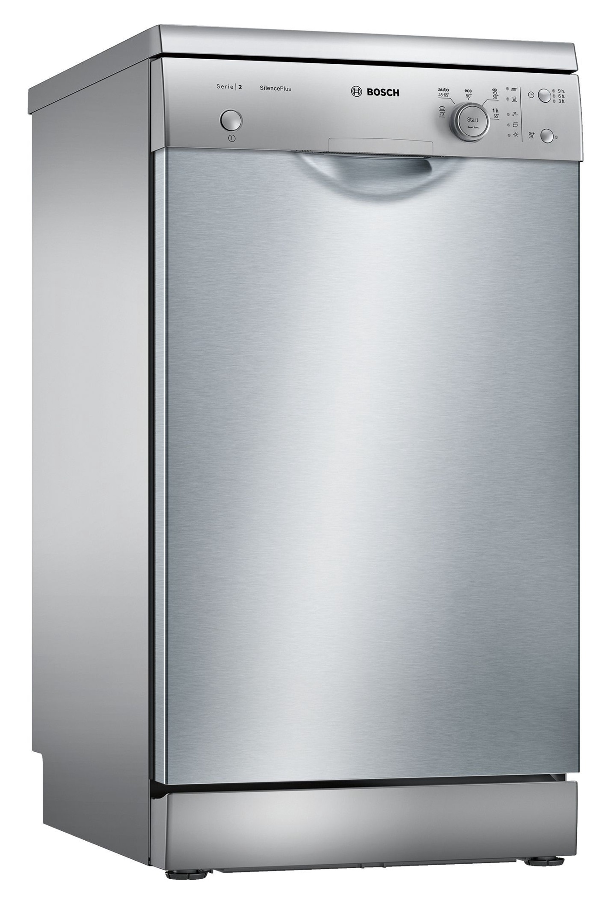

Welcome to indaplovė
Indaploves internetu pirkite pigiau. Akcija RDE.LT
2020.10.29 08:25Internetinė parduotuvė www.rde.lt Laimėk elektrinį paspirtuką Naujienos Prekių pristatymas Mokėjimo būdai Naudinga informacija Kontaktai +370 700 77772 | | [email protected] | Prekių krepšelis Prekių krepšelyje 0 Pažiūrėti krepšelį Prekių kategorijos IT produktų išpardavimas Kompiuterinė technika Televizoriai Mobilieji telefonai ir jų aksesuarai Fotoaparatai ir vaizdo kameros Vaizdo ir garso technika Stambioji buitinė technika Šaldytuvai (414) Šaldikliai (62) Skalbimo mašinos (204) Džiovyklės (38) Centrifugos (2) Indaplovės (61) Viryklės (105) Orkaitės Kaitlentės Gartraukiai (183) Vyno šaldytuvai (12) Vandens šildytuvai (33) Šaldytuvų priedai (31) Papildomi skalbimo mašinų ir džiovyklių priedai (15) Plovimo priemonės (123) Priedai virtuvei (133) Montuojamoji buitinė technika Smulkioji buitinė technika Žaidimų kompiuteriai ir jų priedai Grožis ir sveikata Riedžiai ir paspirtukai Auto prekės ir navigacija Išmanūs namai Namams ir sodui Aksesuarai Visos internetinės parduotuvės kategorijos Prekių atsiėmimo punktas S. Konarskio g. 2 - 99 Kontaktai Ekspertai įrodė, kad plaudami indus rankomis sunaudojame daugiau vandens, negu plaudami indaplovėje, tačiau tai tik vienas šio prietaiso privalumų.
1. Kokio gamintojo indaploves vertinate labiausiai? Turime puikių „Electrolux“, „Indesit“, „Bosch“, „Zanussi“, AEG, „Candy“, „Beko“ ir kt. gamintojų modelių.
2. Galite išsirinkti kompaktišką indaplovę, kurioje tilps 6–10 indų komplektų, arba labai talpią, kurioje išplausite iki 15 indų komplektų.
3. Indaplovės palengvins kasdienę buitį ir indų plovimą paversti maksimaliai paprastu procesu. Jums pagelbės įvairios indaplovių programos ir funkcijos: intensyvus plovimas, pusinis pakrovimas, delikatus plovimas, programos pradžios atidėjimas ir kt.
4. Jeigu ieškote visko, kas geriausia, Jums patiks pažangios indaplovių funkcijos ir galimybės, pavyzdžiui, indaplovę su jutikliniu valdymu nustatysite lengvais pirštų prisilietimais. Taip pat naudinga „TimeBeam“ funkcija, kuri informuos, kiek laiko liko iki plovimo pabaigos, – likęs laikas atvaizduojamas šviesos spinduliu ant grindų. Programa „Hygiene“ užtikrins dar didesnę Jūsų indų higieną, o technologija „Active Oxygen“ sunaikins mikrobus, todėl indai bus itin švarūs, o indaplovėje neliks blogo kvapo.
5. Atkreipkite dėmesį į indaplovės elektros energijos sąnaudų klasę – А+, А++ arba net А+++, taip pat svarbi apsaugos nuo pratekėjimo sistema „Aqua Stop“ ir triukšmo mažinimo sistema „Silent System“. Pradžia Stambioji buitinė technika
Indaplovės
Plotis: 45 cm Bosch Tipas: Siaura (45 cm) Prekių 1-18 iš 61 galimų Puslapis: 1 2 3 > > 4 Candy CDCP6/ E-S indaplovėPalyginti Kaina: 204.22 € Į krepšelį Candy CDCP6/ E indaplovė
Palyginti Kaina: 221.99 € Į krepšelį Beko DFS05013W indaplovė
Palyginti Kaina: 227.99 € Į krepšelį Candy CDCP8/ E indaplovė
Palyginti Kaina: 233.39 € Į krepšelį Candy CDCP8/ E-S indaplovė
Palyginti Kaina: 234.99 € Į krepšelį Indesit DSFE 1B10 indaplovė
Palyginti Kaina: 234.99 € Į krepšelį Beko DFS05013S indaplovė
Palyginti Kaina: 235.99 € Į krepšelį Indesit DSFE 1B10 S indaplovė
Palyginti Kaina: 244.99 € Į krepšelį Bosch SMS24AW00E indaplovė
Palyginti Kaina: 263.80 € Į krepšelį Beko DFS26024W indaplovė
Palyginti Kaina: 270.53 € Į krepšelį Beko DFS26024X indaplovė
Palyginti Kaina: 271.14 € Į krepšelį Indesit DFC 2B+19 AC X indaplovė
Palyginti Kaina: 274.99 € Į krepšelį Indesit DSFO 3T224 C S indaplovė
Palyginti Kaina: 282.29 € Į krepšelį Candy CDP 1L949X indaplovė
Palyginti Kaina: 284.99 € Į krepšelį Bosch SKS62E32EU indaplovė
Palyginti Kaina: 285.99 € Į krepšelį Edesa EDW-6021 WH indaplovė
Palyginti Kaina: 287.91 € Į krepšelį Bosch SKS50E42EU indaplovė
Palyginti Kaina: 288.10 € Į krepšelį Whirlpool WFC 3C26 indaplovė
Palyginti Kaina: 294.65 € Į krepšelį Prekių 1-18 iš 61 galimų Puslapis: 1 2 3 > > 4 RDE.LT. © 2020 UAB MK TRADE LT Apie autorių teises Lyginamos prekės 0 Palygink dabar Pašalinti viską Prekių pristatymas | Atsiskaitymo būdai | Prekių atsiėmimo punktas Cookies Sutinku Mūsų tinklapyje naudojami slapukai, jie padeda mums padaryti svetainę patogesnę. Sužinoti daugiau .
